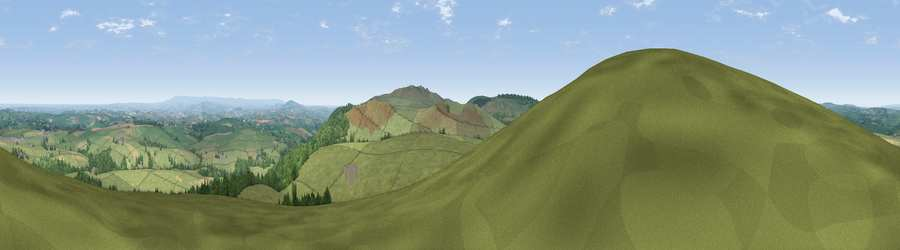

Viewpoint near North Hill
#6325 in England · top 11% of its area beats it · near North Hill · open accessWhere it is
The exact computed spot (SX 24512 77875). Click the marker for map links.
Public access: this spot lies on mapped open-access land (CRoW Act 2000) — you may roam here on foot. Computed from Natural England's CRoW access layer and OpenStreetMap rights of way — not the legal definitive map. Always verify locally.
The view, rendered

A 360° render of this exact spot computed from the terrain model, tree cover and land cover — summer colours, afternoon light, calibrated against photographs of famous viewpoints. Real trees, hedges and buildings will differ in detail.
The panorama
Grey silhouette: terrain skyline in each direction (720 bearings, Earth curvature and refraction included). Dashed green: skyline with trees (+15 m) and buildings (+8 m) as obstacles. Blue strip: how far the ground is visible on each bearing.
Where the view opens
Wedge length = distance to the farthest visible ground on that bearing (vegetation-aware). Rings at 10, 25 and 50 km.
What fills the view
74% grassland · 16% woodland · 9% cropland ·
Angular shares of the visible panorama (visual magnitude), not map area. Landscape diversity 0.33 (0–1 Shannon).
Key numbers
More beautiful places nearby
The staircase of upgrades: each row has a higher view potential than everything closer. Driving times are estimates from straight-line distance, calibrated against real road routing — check an actual route before setting out.
| Place | Direction | Drive | Score |
|---|---|---|---|
| Viewpoint near Henwood | SSE · 3 km | ~7 min | 76.2 |
| Viewpoint near Henwood | SSE · 5 km | ~12 min | 77.3 |
| Caradon Hill | SSE · 8 km | ~16 min | 78.5 |
| Kit Hill | ESE · 14 km | ~26 min | 80.3 |
| Viewpoint near Lesnewth | NW · 18 km | ~31 min | 82.6 |
| Viewpoint near Boscastle | NW · 19 km | ~33 min | 85.2 |
| Viewpoint near Lesnewth | NW · 19 km | ~33 min | 87.7 |
| Viewpoint near Crackington Haven | NW · 20 km | ~34 min | 88.1 |
50.57419, -4.47973 · source: screening · position refined by local search. Computed location — check access rights before visiting.